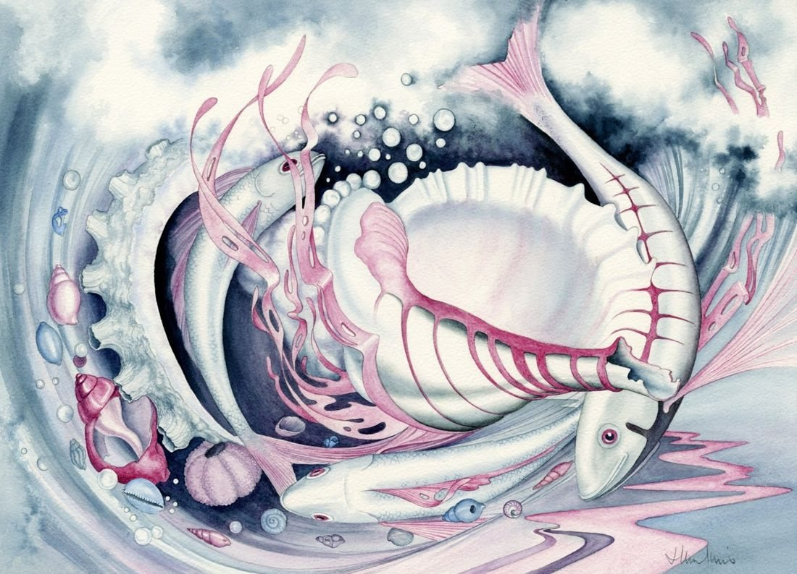

Pink Fish and Shell
No. 75- Medium
- Watercolour on paper
- Size
- 30 × 41 cm
- Year
- 1990s
- Price
- £300
Shells and fishes swirled around with seaweed. Colour is restricted to concentrate the eye on the composition.
Ask about this paintingOr email enquiries@joanmullinsart.co.uk, quoting No. 75. UK only. Collection from Nantwich is free; UK postage is quoted when you enquire.

 Waiting
Waiting Twisting Wave
Twisting Wave Floating Shell
Floating Shell